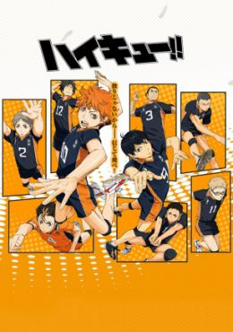

Hinata Shouyou, al ver un partido de voleibol, pretende convertirse en "El pequeño gigante", y se une a la escuela media de voleibol del club. Después de encontrar nuevos miembros, se establece para el torneo de la escuela secundaria, donde se cruzan con una escuela superior, con el "Rey del juego superior", Kageyama Tobio .Aunque su equipo perdió, Shouyou sigue decidido a seguir adelante y vengarse de Kageyama. Al entrar en la escuela secundaria, recibió la sorpresa más grande - que Kageyama se encuentran en la misma escuela y el club!